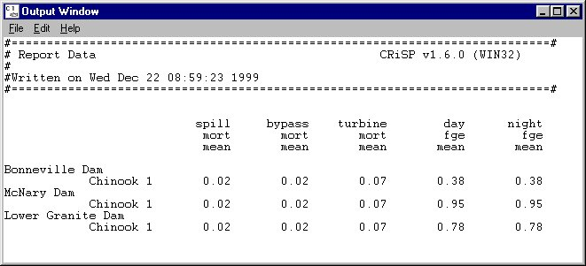

Output Window
Selections made in either in the Input Report Tool or the Monte Report Tool are displayed in the Output Window when you click View or View All. Information in the Output Window can be printed, saved to a file, or copied to a file. Line length is set in either the Input Report Tool or the Monte Report Tool window.
Output Window features
- File
Save As: Save information to a text file in the COMPASS home directory (the directory from which COMPASS was started) or another location on your local system.
Print: Print the information displayed in the Output Window.
Close: Close the Output Window.
- Edit
Copy: Copy selected text to another document.
Select All: Select all text in the window in order to copy the results into another document.
- Help: Open context-sensitive help window.

Output Window